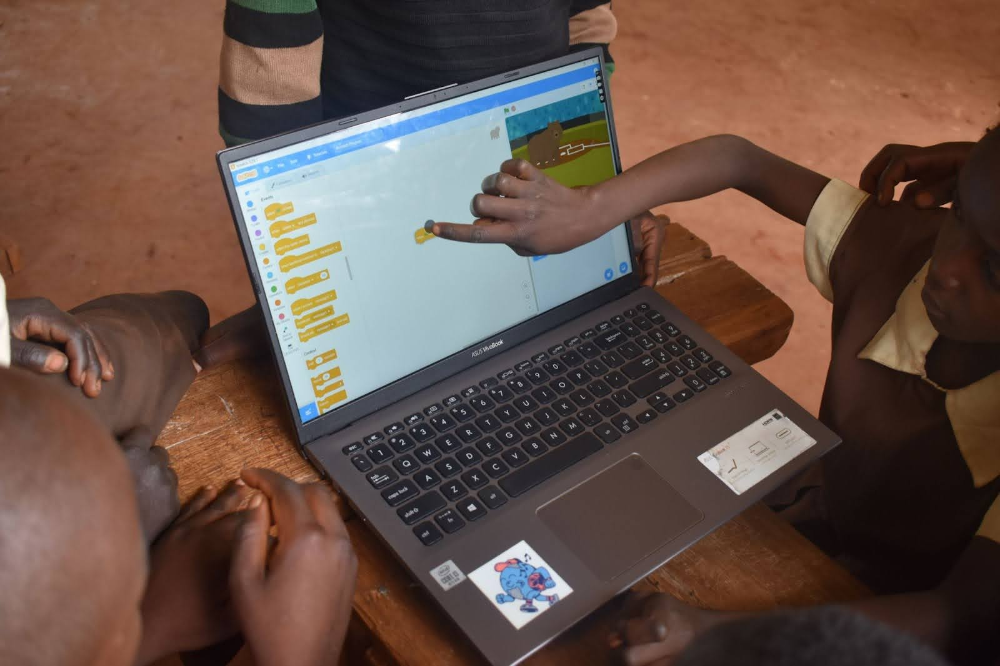

The 10th Circle stands for mayer coding club. Oscar Mayer is a public school in Chicago Illinois. The 10th Circle is trying to spread the club to other Chicago Public Schools (CPS). The 10th Circle teaches kids how to code if you are currently looking for a coding program for
your kid you may consider it a challange. The 10th Circle's mission statment is: "We help kids accoplish their dreams with programming." The 10th Circle creater was Jack Kelly. Jack went to Oscar Mayer and currently is in 3rd grade. Jack had the idea for the club at the end
of first grade, then he worked hard over the summer. Then a few weeks into school the next school year the club had it's first meeting.
The 10th Circle uses a coding language called Scratch

We also use two other websites like code.org and tynker (not tynker cad)